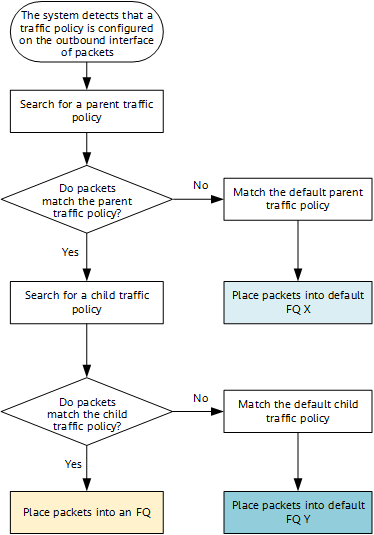
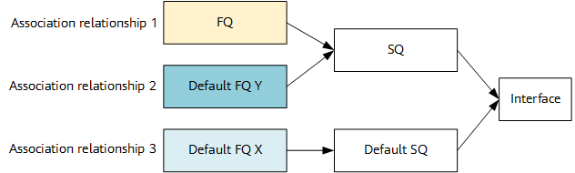

HQoS supports two configuration models: parent and child traffic policy configuration model and class-based queuing (CBQ) configuration model. In the parent and child traffic policy configuration model, users and services are defined through the Modular QoS Command-Line Interface (MQC). QoS parameters are defined for FQs and SQs in child traffic policies and the parent traffic policy, respectively. In addition, child traffic policies are defined in traffic behaviors of the parent traffic policy to associate the FQs and SQs. Figure 1 shows the parent and child traffic policy configuration model.
The parent and child traffic policy configuration model can be used for queue scheduling HQoS and hierarchical CAR HQoS.
The configuration logic of the parent and child traffic policy configuration model is as follows:
After a traffic policy containing a parent traffic policy and child traffic policies is applied to an outbound interface, the system matches the packets to be forwarded on the interface against rules in the parent traffic policy and child traffic policies, according to which it then determines the subsequent actions for the packets. Figure 2 shows the process of matching packets against the parent traffic policy and child traffic policies.

The device first matches packets against rules in the parent traffic policy, and then against rules in child traffic policies. In this way, it determines the FQ that packets are to be placed into. The device then performs HQoS scheduling based on the queue association relationship, scheduling parameters, and shaping parameters.
To ensure packets that do not match the parent traffic policy or child traffic policies can be forwarded normally, the device automatically generates the default parent and child traffic policies after the traffic policy containing the parent and child traffic policies is applied to an interface. Figure 3 shows the three types of queue association relationships.
Based on the policy matching result, the device places packets into queues as follows:
A packet that matches both the parent traffic policy and a child traffic policy is placed into the FQ and then the SQ.
A packet that matches the parent traffic policy but not child traffic policies is placed into default FQ Y and then the SQ.
A packet that matches neither the parent traffic policy nor child traffic policies is placed into default FQ X and then the default SQ.

Figure 4 shows the queue association relationships between multiple FQs and SQs in actual applications.